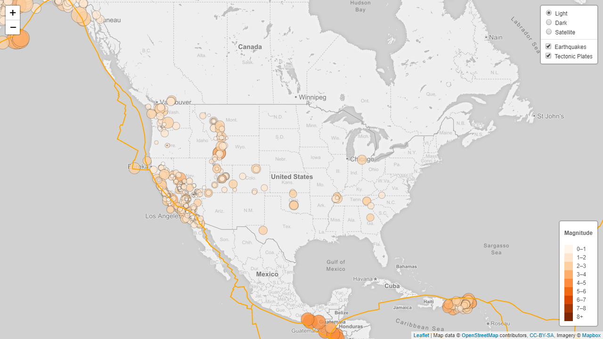
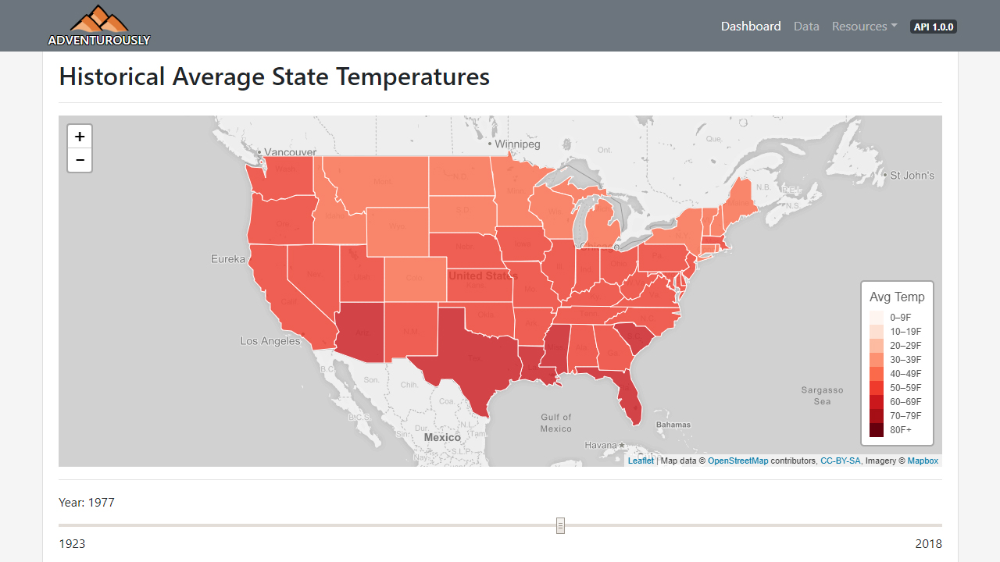

Projects
Earthquakes
Recent earthquakes plotted on a global map. Utilizes GeoJSON data from earthquake.usgs.gov to plot with Leaflet.js and Mapbox.
Adventurously
Web-based portal of climate data. Features an interactive dashboard that contains a choropleth of average temperatures for the last century, and allows users to compare data from two states. Utilizes a RESTful API, and has all data available for viewing and searching.
Earthquakes
Recent earthquakes plotted on a global map. Utilizes GeoJSON data from earthquake.usgs.gov to plot with Leaflet.js and Mapbox.
Earthquakes
Recent earthquakes plotted on a global map. Utilizes GeoJSON data from earthquake.usgs.gov to plot with Leaflet.js and Mapbox.